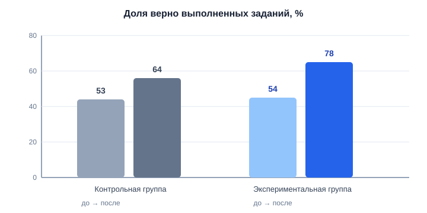

Результаты опытной работы
Апробация платформы в течение семестра: 44 обучающихся в экспериментальной группе и 42 в контрольной.
Дизайн диагностики
Диагностика включала задания на смысл производной, интерпретацию графиков и прикладные задачи на моделирование. Уровень компетенций оценивался по критериям работы. Эмпирическую базу составили 86 обучающихся 9–11 классов и 1–2 курсов.
- 44экспериментальная группа
- 42контрольная группа
- 1 семестрдлительность апробации
- p < 0,05уровень значимости
Динамика верных заданий

В экспериментальной группе показатель вырос с 54 % до 78 % (+24 п.п.), в контрольной — с 53 % до 64 % (+11 п.п.). Наиболее заметный прирост отмечен в заданиях на формулировку гипотезы.
Показатели диагностики
| Показатель | Контрольная группа | Экспериментальная группа |
|---|---|---|
| Верные задания до внедрения | 53 % | 54 % |
| Верные задания после внедрения | 64 % | 78 % |
| Обоснованные гипотезы1 | 41 % | 72 % |
| Индекс удовлетворённости, баллы (шкала 1–5) | 3,6 | 4,5 |
Опрос и статистика
87 % респондентов экспериментальной группы отметили помощь визуализации в понимании материала, 79 % — пользу пошаговой обратной связи. Преподаватели отметили сокращение времени на рутинную проверку.
Статистическая обработка включала средние значения, стандартные отклонения, t-критерий Стьюдента для независимых выборок и непараметрический U-критерий Манна — Уитни; выводы совпали. Рост результатов обусловлен главным образом заданиями на интерпретацию графиков и обоснование гипотез, тогда как вычислительные навыки изменились в обеих группах примерно одинаково.